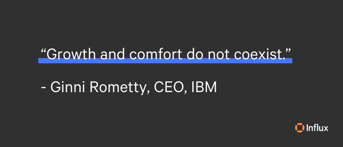

As a business owner, it’s essential to constantly seek new growth opportunities. Critical factors in successful growth are market research, a willingness to take calculated risks, and adapt to changing market conditions. Whether it’s expanding your products, entering new markets, or investing in customer support, you can use various strategies to take your business to the next level.
15 business growth strategies
1. Organic growth
Organic growth is the ideal business growth strategy. Organic growth refers to the increase in a company’s revenue and profitability from its existing operations, products, and markets without relying on acquisitions or other external factors. Strategies that businesses can use to improve organic growth include:
- Innovating
- Identifying new opportunities
- Building brand equity
- Improve customer experience
- Optimize operations
Rather than relying solely on external expansion, organic growth is a long-term approach that fosters sustainable growth.
2. Outsourcing
Outsourcing can be a cost-effective way to grow your business while focusing on core competencies. A company can reduce overhead costs, such as labor, facilities, and equipment, with outsourcing. It can also provide access to specialized expertise, technologies, and processes that may not be available in-house. For example, a company may outsource its customer support with Influx and gain access to 24/7 support, elite agents, and the latest technology needed for scaling your business.
It is important to carefully evaluate potential outsourcing partners to ensure they have the necessary skills, experience, and reputation for delivering quality work. Like any growth strategy, outsourcing comes with risks, such as loss of control over quality and security. The highest level of security for peace of mind solutions drives our relationships with our clients and partners. Please scroll to the bottom of our optimal security blog to review Influx’s security protocol. To reduce costs and streamline operations, outsourcing for growth allows you to stay competitive in a rapidly changing market.
3. Diversification
Diversification is a growth strategy that involves entering into a new market or industry–one that your business is not currently operating in–while creating a new product for that market. Diversification aims to decrease risk while gaining access to new customers and creating new revenue streams.
There are two main types of diversification: related and unrelated. Related diversification involves expanding into businesses related to the company’s current products/services. Disney’s purchase of ABC is an example of related diversification since they are both aspects of entertainment. On the other hand, diversifying into new industries completely unrelated to a business’s current industry is unrelated diversification, such as Amazon entering the grocery store business.
Diversification comes with its risks, and there is no guarantee for success. Entering new markets necessitates significant investment in marketing, research, development, and operations. Moreover, diversification can result in a lack of concentration and resources being stretched too thin, which can be detrimental to the company’s current operation. As a result, diversification should be carefully planned and applied strategically.
4. Product development
Product development is a growth strategy in which a company creates new products or improves existing ones to expand its market share and profits. This strategy involves investing in research and development to identify customer needs and preferences, then using that information to create new or improved products that better meet those needs. The goal is to differentiate the company’s offerings from its competitors, making them more attractive to customers and capturing new market segments.
Product development as a growth strategy can be particularly effective for companies that operate in highly competitive industries, where innovation is key to staying ahead of the competition.
5. Market segmentation
Market segmentation is a growth strategy that divides a broad target market into smaller groups of consumers with similar needs, characteristics, or behaviors. By doing so, companies can better tailor their products, services, and marketing efforts to meet the needs of each segment, thereby improving competitiveness and profitability.
The process of market segmentation typically involves several steps, including:
- Identifying the target market
- Analyzing customer needs
- Developing segments
- Developing targeted marketing strategies
Market segmentation can help companies better understand and serve their customers and improve their marketing effectiveness, resulting in increased revenue.
6. Market development
Market development is a growth strategy that involves selling existing products in new markets. Rather than developing new products or services, the focus is finding new customers or uses. This may include expanding into different geographic locations, targeting new demographic groups, or finding new applications. To implement a market development strategy, a business needs to conduct market research to identify new opportunities, assess competition, and understand the needs and preferences of the target market.
Market development can be a viable growth strategy for businesses looking to expand their customer base and increase their revenue without investing in developing new products.
7. Market penetration
Market penetration, not to be confused with market development, is the concept of increasing sales of existing products in an existing market. The aim is to sell more of the existing product to existing customers and attract new customers within the same market. This strategy is often achieved by adopting various marketing tactics such as advertising, sales promotion, discounts, and improved distribution channels to increase product visibility.
Market penetration is a common strategy for businesses with a strong foothold in a particular market but looking to increase their market share or defend against new competitors. This growth strategy is an effective way to achieve growth without the risks and costs associated with developing new products or entering new markets.
8. Market disruption
Market disruption involves creating a new market or ‘disrupting’ an existing one by introducing a new product. Market disruption aims to create a new market that did not previously exist or to fundamentally change how an existing market operates by meeting pain points.
Examples of successful market disruptors include companies like Uber, Airbnb, and Netflix. Each of these companies introduced new business models and technology to their respective markets, fundamentally changing how customers interact with their services.
Market disruption can be a risky strategy, as it involves significant investment and uncertainty. However, for companies that can successfully disrupt a market, the potential rewards can be substantial.
9. Excellent customer service
One of the most critical growth strategies is excellent customer service. Excellent customer service can help a business grow in several ways:
- Customer retention: When a business provides excellent customer service, it creates a positive experience for the customer, making them more likely to return for future purchases. This increases customer retention and loyalty, leading to repeat business and increased revenue.
- Customer referrals: Satisfied customers are more likely to refer their friends and family to a business that provides excellent customer service. This can lead to new customers and increased sales.
- Positive reputation: Word of mouth is a powerful marketing tool, and when customers have a positive experience, they are more likely to share it with others. This can help to build a positive reputation, leading to increased trust, credibility, and customer loyalty.
- Increased sales: Providing excellent customer service can lead to increased sales, as customers are more likely to make additional purchases and spend more money when they feel valued and appreciated by a business.
- Competitive advantage: In today’s competitive marketplace, businesses that provide excellent customer service can stand out from their competitors and gain a competitive advantage. This can lead to increased market share, growth, and long-term success.
Maintaining a loyal customer base is just as important as acquiring new customers. Scale your operations with Influx, your trusted customer support experts!
10. New channels
Another approach for business growth is to offer products through additional distribution channels. For example, a corporation may decide to sell its goods via retail outlets after previously operating solely online. They may also broaden their market to consumers rather than merely B2B (business-to-business).
11. Vertical integration
Vertical integration involves expanding operations into new areas of its supply chain through manufacturing or distributing. In vertical integration, a company takes control of several stages of its production process, from raw materials to distribution. There are two main types of vertical integration: backward and forward.
Backward integration occurs when a company expands into upstream activities, such as acquiring suppliers or producing raw materials. For example, a car manufacturer that owns a steel mill or a coffee shop that owns a coffee plantation.
Forward integration occurs when a company expands into downstream activities, such as owning its distribution network or retail outlets. Examples are a car manufacturer that owns its dealership or a clothing manufacturer that owns its retail stores.
Vertical integration can be expensive and complex to implement, leading to reduced flexibility and a lack of innovation. Alternatively, its advantages include greater control over the supply chain, increased efficiency, better quality control, and the ability to capture a more significant share of the profits generated along the supply chain.
12. Joint venture
A joint venture is a strategic partnership between two or more companies that agree to pool their resources and expertise to achieve a common goal or undertake a specific project. In a joint venture, the partners share ownership, risks, and profits or losses.
Joint ventures are often formed when companies want to combine their strengths, such as technology, manufacturing capabilities, distribution channels, or market knowledge, to create new products, enter new markets, or increase their competitive advantage.
13. Acquisitions
Acquisition is when a company purchases most or all of another company’s shares to gain control of that company. An example would be Google’s acquisition of Android. Some common reasons for acquisition include achieving economies of scale, eliminating competition, or expanding product offerings. An acquisition can occur through various methods, such as a merger, a stock purchase, or an asset purchase. Acquisitions can be complex transactions involving legal, financial, and strategic considerations.
14. Growth investing
Growth investing is a stock-buying technique for companies predicted to grow faster than their industry or the overall market. Growth investing typically involves investing in companies in their early stages of development and with the potential for significant future growth.
One of the risks associated with growth investing is that these companies often have high valuations, making them vulnerable to market volatility and economic downturns. Additionally, companies in their early stages of development may need more proven business models or untested products, which can lead to higher risk for investors.
Overall, growth investing is a strategy that seeks to generate long-term capital appreciation by investing in companies with high growth potential. It can be an effective way for investors to participate in the growth of innovative companies and industries, but it’s important to carefully evaluate each investment’s risks and potential rewards.

15. Productivity and efficiency
Productivity and efficiency can be essential growth strategies because they allow companies to do more with less. By improving productivity and efficiency, businesses can increase output, reduce costs, and boost profitability. This can be achieved through various methods, such as process improvements, automation, and better utilization of resources. For example, a manufacturing company might invest in new technology that increases the speed and accuracy of production, or a service company might streamline its processes to reduce the time and effort required to deliver its services.
Maximize your growth potential with Influx solutions
Your time is valuable, and you likely have many responsibilities. Outsourcing to a trusted team of experts, like Influx, can free up your time and resources, allowing you to focus on growing your business. Whether you need sales teams or customer support, our solutions are cost-effective and laid out in simple, month-to-month pricing. By growing with Influx, reduce operational costs and remain competitive in today’s fast-paced environment. Find your growth solution now!